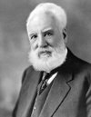

Telefonun mucidi Alexander Graham Bell (1847–1922) insanlar arası iletişimin yapısını değiştirmiş ve daha sonra “AT&T” adını alacak olan ünlü şirketi kurmuştur. Bu firma Amerikan tarihinin en başarılı girişimlerimden biri olmuştur. Ancak Bell kendi icadı konusunda son derece huzursuzdu. Ömrünün sonuna doğru onu bir baş belası olarak gördüğünü ve çalışma odasında asla telefon bulundurmadığını itiraf edecekti.

İskoçya’daki Edinburgh’ta doğdu. Çocukken kendisine “Aleck” lakabı takılmıştı. Ses ve işitme duyusu çocukluktan beri ilgisini çekiyordu. Annesi Eliza Grace Symonds (1809–1897) işitme duyusunu çocukken yitirmişti. Babası Alexander Melville Bell (1819–1905) ise sağır ve dilsiz çocukların eğitiminden sorumluydu. Oğlunu da kendi yolundan gidecek şekilde yetiştiriyordu.
Aile, Bell’in her iki erkek kardeşi de veremden ölünce 1870 yılında Kanada’ya göç etti. Bell daha sonra Boston’a gitti. Burada sağırlar okulunda çalışmaya başladı. Bu okuldaki öğrencilerinden biri de Helen Keller (1880–1968) olacaktı.
Boston’da telefonla ilgili deneylerini yapmaya başladı. Thomas A. Watson (1854–1934) isimli on sekiz yaşındaki asistanı kendisine yardımcı oluyordu. Bell 1876 yılında icadını tamamladı. Telefon hattı ile aktarılan ilk sözcükler “Mr. Watson buraya gel, seninle işim var,” olmuştu.
1876 yılında Bell icadını kamuya açıkladı. Çalışan ilk ticari sistemler iki yıl içersinde kuruldu. Bell ve finansal destekçileri sistemleri yaygınlaştımak için “Bell Telefon Şirketi”ni kurdular. Firma 1885 yılında “Amerikan Telefon ve Telgraf Şirketi” adını aldı. “AT&T” hızla ülkenin en karlı kuruluşlarından biri haline gelmişti. Büyük bir tekel haline gelen firma, 1982 yılında ulusal anti-tekel düzenlemeleri ile parçalandı.
Bell hayatının kalan kısmını Nova Scotia’daki arazisinde geçirdi. Havacılıkla ilgili deneylere yoğunlaşmıştı. İlkel bir metal dedektörü geliştirmiş ve bu aygıt Başkan James Garfield’ı (1831–1881) öldüren kurşunun yerini tespit etmek için kullanılmıştı. Bell ömrü boyunca on sekiz patent aldı. Yetmiş beş yaşında Nova Scotia’da öldü.
Ek Bilgiler
1- Bell telefonun patentini 29. doğum gününde aldı. Patent numarası 174,465’ti.
2- Ülkenin ilk şehiriçi telefon sistemi Connecticut’taki New Haven’de 1878 yılında kuruldu. İçinde 391 abonenin isim ve numaraları bulunan ilk telefon rehberinin birinci baskısı, 2008 yılında yapılan bir açık arttırmada 170.500 dolara satıldı.
3- Bir ses yoğunluğu birimi olan“bel”terimi, ismini telefonun mucidinden almıştır. Bir belin onda biri değerindeki desibel ise daha sık kullanılan bir ses ölçüm birimdir.